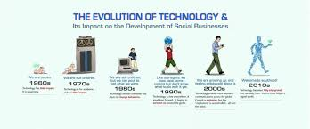
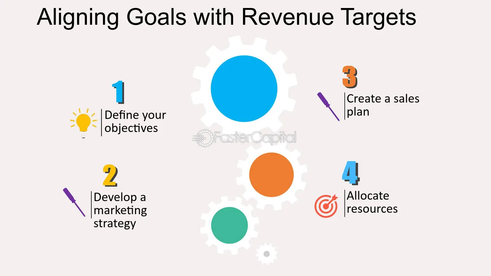

History
TechCon, established in 2010, began as a small gathering for tech enthusiasts to share ideas and innovations. Over the years, it has evolved into a premier global event, attracting top industry leaders, developers, and researchers. TechCon 2024 marks a significant milestone, showcasing cutting-edge advancements in AI, cybersecurity, blockchain, and more. The conference's growth mirrors the tech industry's rapid expansion and diversification. With its blend of insightful keynote speeches, hands-on workshops, and extensive networking opportunities, TechCon 2024 continues to foster collaboration and drive innovation, solidifying its place as a cornerstone event in the technology sector.

Mission
TechCon 2024 is driven by a commitment to fostering innovation, collaboration, and knowledge sharing in the technology sector. The primary goals of the conference include:
Past Speakers
Innovation: Showcase the latest advancements in technology, providing a platform for unveiling groundbreaking research and cutting-edge applications in AI, cybersecurity, blockchain, and other emerging fields.
Collaboration: Bring together a diverse group of tech professionals, industry leaders, and enthusiasts to facilitate networking, partnership opportunities, and collaborative projects that push the boundaries of what technology can achieve.
Education: Offer a range of workshops, panels, and presentations aimed at providing attendees with practical skills and insights. This helps ensure they are well-equipped to tackle current and future challenges in their respective fields.
Inspiration: Inspire attendees by presenting visionary ideas and success stories from leading innovators and thinkers. This encourages a forward-thinking mindset and motivates participants to contribute to technological progress.
Inclusivity: Promote a welcoming and inclusive environment where all voices are heard and valued. This diversity of perspectives drives richer discussions and more robust solutions to global tech challenges.
By adhering to these principles, TechCon 2024 aims to be a catalyst for positive change, driving the tech industry towards a more innovative, collaborative, and inclusive future.
